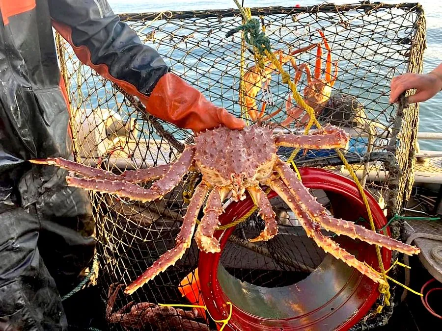

甲壳动物 · 动物界
堪察加拟石蟹 Paralithodes camtschaticus

俗称帝王蟹的大型甲壳动物，步足展开可达 1.8 m，肉质鲜美，是北太平洋重要的渔业资源和高端海产。
- 分类
- 门节肢动物门纲软甲纲目十足目科石蟹科属拟石蟹属
- 栖息环境
- 北太平洋冷水海域，从浅海到数百米深，随季节洄游
- 地理分布
- 白令海、阿拉斯加至日本北海道的北太平洋；巴伦支海为引入种群
- 保护级别
- 暂无评估；巴伦支海种群被视为入侵物种
物种志
堪察加拟石蟹外形像蟹，但分类上属于寄居蟹所在的异尾类。头胸甲近圆形，表面布满棘刺，步足 4 对，第五对退化藏在鳃腔中，全身暗红色。成年雄蟹腿展开可达 1.8 m，体重 5–8 kg，个别大个体超过 10 kg。
它栖息在北太平洋冷水海域，随季节在深浅水之间洄游，秋季结群到浅水产卵，冬季移向深水。食性以底栖动物为主，吃海蛇尾、贝类、蠕虫和海胆，也会捕食小鱼。雌蟹把受精卵抱在腹下约 1 年，幼体浮游数月后沉落海底。堪察加拟石蟹原产白令海和阿拉斯加一带，是重要的高端海产；20 世纪 60 年代被苏联引入巴伦支海，如今已在挪威沿海扩散，成为当地破坏底栖生态的入侵物种。
形态与习性
- 食性底栖动物为主，吃海蛇尾、贝类、蠕虫、海胆
- 体型腿展可达 1.8 m，雄蟹体重 5–8 kg
- 寿命可活 20 年以上
- 繁殖雌蟹抱卵约 1 年，幼体浮游后沉落海底
- 分布北太平洋原产，1960 年代引入巴伦支海
- 经济全球重要的高端海产，捕捞量受配额管理
趣味知识
- 帝王蟹其实不是真正的蟹，在分类上更接近寄居蟹。
- 帝王蟹腿展开可达 1.8 米，是体型最大的甲壳动物之一。
- 苏联在 1960 年代把帝王蟹引入巴伦支海，如今它已成为挪威沿海的入侵物种。